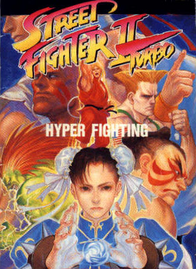

Inicialmente lançado como Street Fighter II: The World Warrior em 1991, SF II tornou-se um grande sucesso, popularizando o estilo de jogo.
Controlando entre 8 jogadores (Ryu, Ken, Blanka, Zangief, Dhalsim, Guile, E. Honda, e Chun-Li, todos de países diferentes exceto os japoneses Ryu e Honda, e os americanos Ken, Balrog e Guile), além de 4 chefes (Sagat, que aparecera no jogo original; Balrog, Vega, e M. Bison).
Por sinal, os três chefes "novatos" tiveram seus nomes alterados fora do Japão (o boxeador afro-americano era chamado M. Bison, parodiando Mike Tyson; para evitar processo, a Capcom rebatizou-o como Balrog, que era o nome do toureiro espanhol rebatizado Vega; que era o nome do chefe final, esse batizado como M. Bison).
Street Fighter II revolucionou a jogabilidade "fighting game" da época, fazendo deste, o melhor jogo de luta já lançado até então.
Street Fighter ganhou o título de melhor jogo de luta de todos os tempos, eleito pelos jogadores de todo o mundo, fascinando as crianças que se identificavam com o personagem de sua pátria.
São oito lutadores de vários lugares do mundo, que podem ser escolhidos, mais quatro personagens mestres, os quais não se pode selecionar nessa versão.
História:
O jogo é a continuação do original Street Fighter, onde o lutador japonês Ryu, após ter vencido o campeão anterior Sagat, continua sua jornada por novas lutas, junto com seu amigo e eterno rival, Ken Masters, enfrentando uma série de novos oponentes, dentre eles o terrível comandante da organização criminosa Shadaloo, M. Bison.
A Capcom, todavia, continuou lançando versões modificadas do jogo no decorrer dos anos, a saber:
Street Fighter II: Champion Edition (1992)
Essa versão foi lançada para corrigir alguns bugs, introduzir novos golpes e aperfeiçoar diversos detalhes da jogabilidade, e apresentava alguns quadros de animação redesenhados.
Além disso, permitia aos jogadores controlar os quatro personagens "chefões" (Balrog, Vega, Sagat e M. Bison), e permitia lutas com dois personagens iguais, o que por sua vez introduziu a idéia de cores diferentes para as roupas dos lutadores.
Street Fighter II: Champion Edition é uma versão com um pouco mais de memória e os jogadores estão mais rápidos.
É nesse jogo que Ryu e Ken começam a mostrar estilos de lutas diferentes.
Mas como acontecia em Street Fighter II, Guile e Dhalsim continuam sendo os melhores jogadores.
É o 2º jogo da série Street Fighter e um dos jogos mais conhecidos do mundo.
O jogo foi lançado pela Capcom com a placa de arcade CPS-1, de fabricação própria, que possibilitava respostas rápidas e gráficos e sons impressionantes para a época em que foi lançada.
Graças a essa tecnologia inovadora, Street Fighter influenciou dezenas de outros jogos do mesmo estilo, e foi um divisor de águas no ramo dos jogos de luta.
Street Fighter II Turbo: Hyper Fighting (1992)

Street Fighter II Turbo: Hyper Fighting foi lançado em 1992 e é a resposta da Capcom aos piratas que, usando uma cópia do jogo fizeram uma série de alterações na programação original de Street Fighter II, deixando-o muito mais atraente.
Os lutadores podiam usar várias bolas de fogo ao mesmo tempo e executar os golpes especiais no ar.
A Capcom utilizou as melhores idéias dos piratas e tirou os defeitos mais gritantes. Possuem versões nos consoles Snes e Mega Drive.
Essa versão acrescentou alguns golpes novos e uma nova cor de roupas para cada personagem, além de apresentar considerável aumento de velocidade em relação às versões anteriores.
Super Street Fighter II: The New Challengers (1993)
Super Street Fighter II: The New Challengers é uma resposta aos fãs que estavam esperando o lançamento de Street Fighter III.
Esses ficaram frustrados, mas o novo jogo utilizava os novos recursos da placa CPS-2 da Capcom, que garantiu melhores gráficos e som.
O jogo contava com o sistema sonoro Q-Sound, e teve sua parte sonora totalmente remodelada.
O jogo tinha muitos bugs, possivelmente em razão de seu lançamento apressado -- os criadores queriam lançar essa versão antes da Midway lançar o jogo Mortal Kombat II.
Quatro novos lutadores foram criados (o jamaicano Dee Jay, a inglesa Cammy, o chinês Fei Long e o mexicano T.Hawk) e as artes antigas ganharam uma arte melhorada.
Super Street Fighter II Turbo (1994)

A última versão de SF II trouxe um jogo mais rápido e com muito menos bugs.
Entre as novidades estava um personagem secreto, Akuma (Gouki no Japão), que herdou os movimentos de Ryu e Ken.
Akuma só podia ser enfrentado caso o lutador vencesse todas as lutas sem perder nenhum round.
Era também possível lutar como Akuma introduzindo um código.
Depois dessa versão, a prática de introduzir personagens secretos foi reproduzida por diversos fabricantes.
Super SF II Turbo também introduziu o conceito de air juggling ("malabarismo aéreo"), que consistia em acertar golpes nos oponentes durante uma queda, ou seja, antes de tocarem o chão.
O jogo foi ainda o primeiro a introduzir golpes chamados super ou especiais, que tiravam muita energia do oponente, só podiam ser utilizados depois que era, ao longo da luta, preenchida uma barra especial, e eram mais difíceis de ser executados.
Desde então se tornou quase que obrigatória a inclusão desse tipo de golpe nos jogos de luta posteriores ao Super SF II Turbo.
Hyper Street Fighter II: The Anniversary Edition (2006)
Edição especial comemorativa de 15 anos de Street Fighter, lançado para X-Box e PS2.
O Hyper Street Fighter II: The Anniversary Edition (HSFII:TAE) reúne as cinco versões oficiais do SFII (The World Warrior, Champion Edition, Turbo/Hyper Fighting, Super e Super Turbo) numa 'hiper' edição que permite recriar um combate entre qualquer personagem de qualquer SFII.
É, sem dúvida, uma retrospectiva de entretenimento inalterada, mas não existem muitos jogos da época do SFII que tenham permanecido tão fortes até aos dias de hoje.
Os elementos 'novos' são a já referida possibilidade de escolher uma personagem de cada versão, as músicas em versões Arrange (além das versões em CPS-1 e CPS-2) e versões em CPS-1 de músicas como a do Opening de Super Street Fighter II: The New Challengers e de lutadores surgidos somente a partir dessa versão (Cammy, Fei Long, Dee Jay, T. Hawk e Akuma) que não existiam até então.
Será que o simples Guerreiro Mundial Ryu consegue derrotar o super peso-pesado Super Turbo Ken? Será que a Hiper Lutadora Chun-Li consegue ser melhor que a sua Super encarnação? Só existe uma forma de descobrir.
Para evitar desigualdades evidentes, a Capcom manteve o equilíbrio de jogo de cada uma das edições, mas enquanto as personagens das edições mais recentes beneficiam de movimentos extra, os elementos das edições anteriores são bastante mais poderosos.
Embora os não seguidores deste título possam ficar espantados com a excessiva onda de entusiasmo à volta deste jogo, para os fãs que seguiram o jogo ao longo dos anos representa uma oportunidade única.
Desde então o melhor Street Fighter II já lançado até hoje.
Super Street Fighter II' Turbo:HD Remix (sem data de lançamento)

Edição com lançamento ainda previsto para o Play Station 3 e o XBox 360.
Como anunciado, será ainda um jogo em duas dimensões(2-d), mas com sprites de animação inéditas, superando a qualidade de qualquer jogo de luta em 2-d lançado até hoje.
Não há muitas informações sobre esse jogo, e nem sua data de lançamento, mas os personagens confirmados para ele são os mesmo em Street Fighter II Turbo.
O que se sabe até agora, é que esse lançamento é um "remake" do jogo original, mas com ótimas qualidades visuais.
Street Fighter Zero(Street Fighter Alpha)